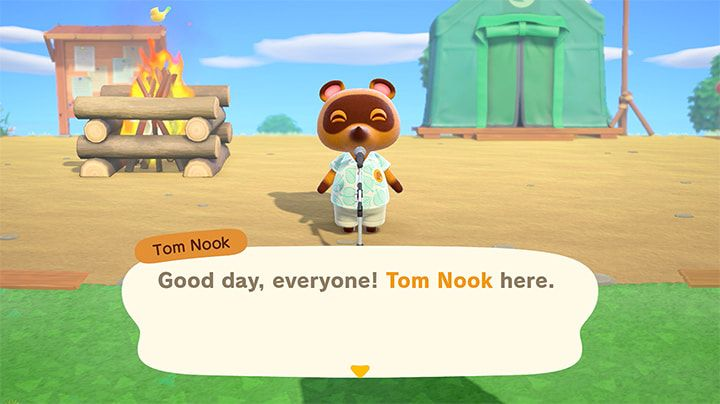
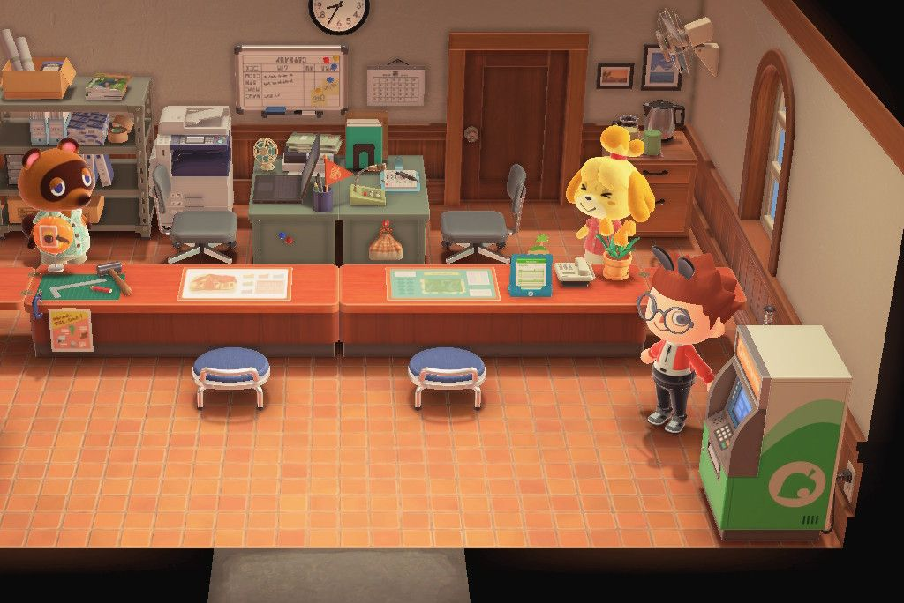
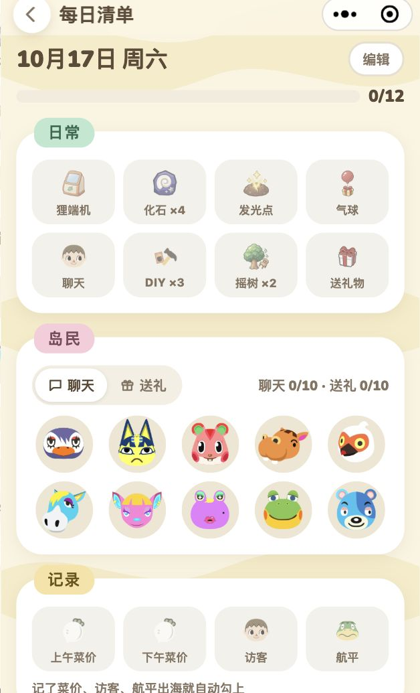
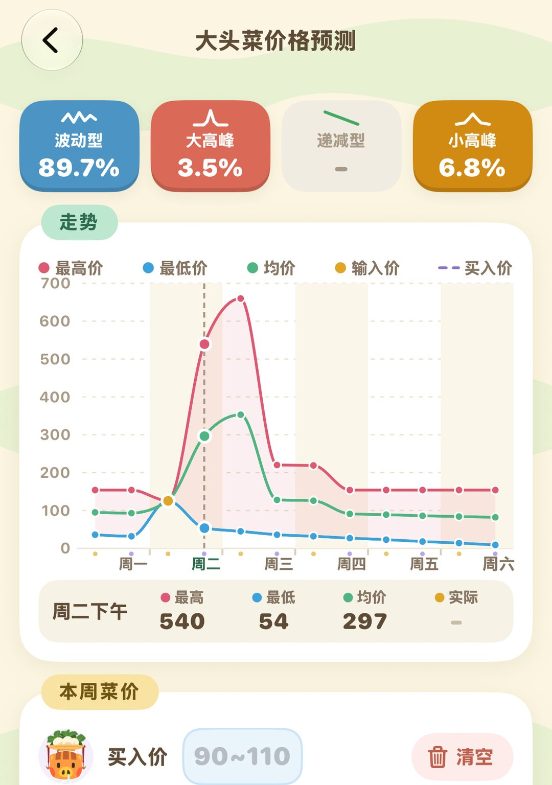

新手入门：上岛第一周做什么
按天数排好的主线，加上每天顺手的小事和早期攒钱
动森跟着现实时间走，岛上的很多事都要「等到第二天」：交完材料，商店第二天才开张；捐够生物，傅达第二天才搭好帐篷。所以刚上岛那几天，一天做不完是常态，也不用熬夜硬刷，照着下面的顺序一天推一点就行。
第一周的主线大致是这样：先用里数还清帐篷，把傅达请上岛，接着盖房子、开商店，再给新岛民准备住处，最后冲岛屿评价 3 星。3 星是第一个大目标，到了以后 K.K. 会来开演唱会，你也会拿到改地形用的「岛屿创作家」。不过第一周就冲到 3 星的人不多，正常要两三周，别着急。
01第 1 天：搭帐篷，攒里数
上岛后先挑一块地方搭帐篷，然后跟着狸克在岛上捡树枝、摘水果，熟悉一下操作。到了晚上，大家围着篝火开晚会，你会在这时给岛起名。

第一天晚上的篝火晚会，狸克给大家讲话（英文版画面）（图：任天堂）
晚会散了以后，狸克会跟你讲里数和 DIY 是怎么回事。帐篷的费用是 5,000 里数，不收铃钱。打开手机里的「Nook集里游＋」，上面列着钓鱼、捉虫、摇树、做东西这类小任务，完成一个就会冒出一个新的，在岛上随便转一圈就能攒下不少，5,000 里数用不了多久。
服务处的帐篷里能领到简陋钓竿和简陋捕虫网。钓到的鱼、捉到的虫先别卖，拿去给狸克看，凑够 5 种不同的生物，博物馆的傅达就会答应上岛，第二天他的帐篷就搭起来了。所以第一天多钓几种鱼、多抓几种虫，能把博物馆的进度往前赶。
小提示3.0 起做东西一次最多能做 10 个。在自己家的工作台做 DIY 时，收纳里的材料能直接用，不用先一样样拿到口袋里。
02第 2～3 天：博物馆、商店、房子
傅达的帐篷
傅达的帐篷搭好以后，就能把鱼和虫捐给他了。地上挖出来的化石先拿去请他鉴定，博物馆里缺的就捐掉，重复的留着卖钱。这期间你会陆续学会做铲子和撑杆跳竿子，有了撑杆跳竿子就能跳过河，去河对岸转转。再凑够 15 件捐赠，博物馆就会盖成正式建筑。
还清帐篷之后
里数还清后，狸克会提出给你盖一栋房子。这一次要的是铃钱，贷款 98,000，不催、也不收利息，第二天房子就盖好了，慢慢还就行。
豆狸也会来请你帮忙开商店，要木材、软木材、硬木材、铁矿石各 30 个。木材用斧头砍树得来，一棵树一天能砍 3 个，多找几棵轮着砍；铁矿石靠敲石头。不用一次交齐，凑满一种就先交一种，四样全交完以后，商店第二天开张，营业时间是 8 点到 22 点。
03第 4～7 天：迎岛民、搭桥、冲 3 星
到了这几天，进度就看你每天玩多久了，大致按下面几件事往下推。
1. 给 3 位新岛民准备房子。狸克会请你挑地方放新岛民的房子，每块地上还要摆几件他指定的家具。这期间他会请你搭第一座桥，也会教你做梯子，有了梯子就能爬上高台。
2. 服务处改建。3 位岛民都搬进来以后，服务处的帐篷会改建成正式建筑，西施惠也会来上班。找她就能查岛屿评价。
3. 露营地。狸克会请你挑地方盖露营地，盖好后时不时会有访客来露营，聊得来的话可以邀请对方搬到岛上。
4. 裁缝店。绢儿会不定期来广场摆摊。等博物馆、商店、服务处都建好，你又在她摊上分两次买过东西，她第三次来时就会决定在岛上开店。

改建好的服务处，狸克和西施惠都在这里
这些都做完，接下来就是冲岛屿评价 3 星。西施惠会告诉你还差在哪，通常是花、树或者摆在外面的家具不够，缺什么补什么。到 3 星后 K.K. 会来开演唱会，之后你会拿到改地形用的「岛屿创作家」。
注意岛屿评价要看树和花，前期别急着到处砍树、乱挖地，想清楚再动手。
04每天顺手做的小事
主线之外，岛上每天都会刷新一批东西，顺手捡一捡，材料和铃钱攒得快不少。
地上有星形裂缝的地方埋着化石，每天 4 个，挖出来请傅达鉴定。
岛上的石头每天都能敲出材料，其中有一块敲出来的是铃钱。敲之前在自己身后挖两个坑，人就不会被弹开，能一口气敲满 8 下。
沙滩上每天会漂来一个瓶中信，瓶子里装着一份DIY手册，沿着海边走一圈就能捡到。
常去找岛民聊天，和他们的关系会慢慢变好，偶尔还能收到礼物；碰上在家埋头做 DIY 的岛民，他们还会教你新做法。
商店每天进的货都不一样，没见过的家具先买下来，错过了不一定什么时候再碰上。
这几样天天都有，反而容易漏。动森圈圈里有每日清单，做完一项勾一项。完整的日常安排见《每天上岛做这些就够了》。

小程序里的每日清单，岛民聊天、送礼也能一个个勾
05早期怎么攒铃钱
还房贷、扩建都要铃钱，前期来钱的路子主要是下面这几条。
最省事的是卖水果。岛上自带的水果一个卖 100 铃钱，别的岛的水果能卖到 500。从神秘岛或朋友岛上带几颗回来种下，长成以后就是一棵摇钱树。
再就是大头菜。周日上午曹卖会来岛上卖大头菜，周一到周六商店每天上午、下午各收一次，收购价一直在变，挑价高的时候卖。大头菜到下个周日就坏了，一定在那之前卖掉。
平时钓鱼捉虫的收获也都能卖钱。上手以后可以试试夜里出没的狼蛛、蝎子，或者下雨天去钓矛尾鱼，这几样都卖得上好价钱。
用不上的铃钱记得存进 ATM。服务处的 ATM 每月会给一点利息，存着总比揣在口袋里强。
拿不准哪天卖菜，可以把每天看到的价格记进动森圈圈的菜价预测，它会推出当周大概的走势。

菜价预测：填上买入价和每天看到的价格，推当周的走势
小提示里数还清帐篷后别一口气花光。服务处的狸端机可以用 2,000 里数换一张「里数旅行券」，飞去神秘岛砍竹子、带水果、攒材料，运气好还能碰上想邀请的岛民。
小提示简陋工具用一阵就会坏。材料够的话一次做 10 把备着，等学到更结实的工具做法再换。
动森圈圈 · 小程序和 iOS App 都搜「动森圈圈」